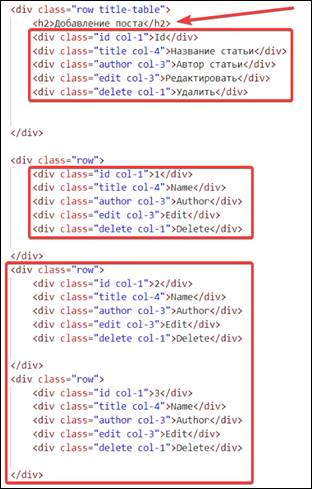
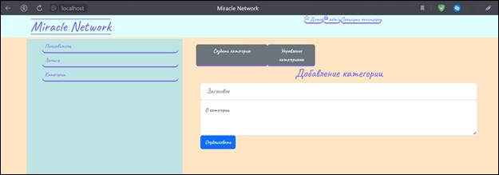

Задача урока: познакомиться с версткой
админ-панели и ее содержимым, использовать доступные макеты с Bootstrap для быстрой верстки.
На занятии мы
узнаем:
1.
Как использовать доступные
формы для реализации админ-части.
2.
Как работают ссылки и
текстовые поля.
3.
Как работает множественный
выбор.
Верстка панели
администратора. Посты
Создадим дополнительные папки.
Назовем папки posts, topics и users. В каждую папку добавим два файла – create.php и index.php (рис. 11.1).
Рис. 11.1. Создание папок и файлов в них
В обычном файле index.php выбираем весь код, копируем его, возвращаемся в папку posts, в файл index.php и вставляем.
Переходим в папку css и создаем файл под названием admin.css (рис. 11.2).
Рис. 11.2. Создание файла
Находим ссылку css/style.css и меняем ее. Вместо обращения к файлу style.css необходимо прописать обращение к admin.css (рис. 11.3).
Рис. 11.3. Написание пути
Далее исправим include. Для этого добавим Admin к указанному документу и добавим несколько точек спереди (рис. 11.4).
Рис. 11.4. Добавление точек
Создадим в папке include новый файл «headerAdmin.php». Скопируем в него весь код из файла «header.php».
Сделаем стиль для заголовка. Копируем код шапки сайта из файла «style.css» и вставляем в «admincss» (рис. 11.5).
Рис. 11.5. Добавление стиля
В «headerAdmin.php» удаляем код (рис. 11.6).
Рис. 11.6. Удаление кода
Вызовем сессию в «index.php» (рис. 11.7).
Рис. 11.7. Вызов сессии
Изменим ссылку в «users.php», чтобы пользователь перемещался на главную панель постов (рис. 11.8).
Рис. 11.8. Изменение ссылки
В файле «index.php» удаляем код, помеченный комментариями «Блок интервальной карусели», «Конец карусели», «Средний блок главной страницы» и «Боковая информация» (рис. 11.9 – 11.11).
Рис. 11.9. Лишний код
Рис. 11.10. Лишний код
Рис. 11.11. Лишний код
Необходимо исправить include, поскольку мы находимся в другой директории (рис. 11.12).
Рис. 11.12. Исправляем путь
Чтобы сделать пользователя администратором, в поле необходимо поменять значение с 0 на 1 (рис. 11.13).
Рис. 11.13. Поле значения администратора
Чтобы не допустить ошибок подключения на сайте, изменим include (рис. 11.14).
Рис. 11.14. Изменение подключения
На localhost войдем в уже созданный аккаунт пользователя, который является администратором. Обновляем страницу. После этого появится страница администратора (рис. 11.15).
Рис. 11.15. Страница администратора
Создадим стиль для страницы администратора. В файле «style.css» копируем код от начала стиля для нижней части до конца файла и вставляем его в «admin.css».
После этого сайт изменит внешний вид (рис. 11.16).
Рис. 11.16. Новый внешний вид страницы
администратора
Перейдем к верстке index.php. После include допишем следующее (рис. 11.17).
Рис. 11.17. Добавление кода
Наша страница будет разделена на две половины. В первой половине будет управление с различными категориями (посты, категории, пользователь и т. д.), во второй будут находиться административные настройки.
Добавим следующие элементы списка: Пользователи, Записи и Категории (рис. 11.18).
Рис. 11.18. Добавление кода
В классе post создаем еще один div по классу row, внутри которого будет
следующее (рис. 11.19).
Рис. 11.19. Добавление div
Копируем этот же код и вставляем ниже еще 3 раза, заменив «row title-table» на «row», «Имя» – на «Name», «Автор» – на «Author», «Редактировать» – на «Edit», «Удалить» – на «Delete», id поменяем на «1», «2» и «3» соответственно (рис. 11.20).
Рис. 11.20. Копирование кода
После этого на сайте появится перечисление авторов и их статей (рис. 11.21).
Рис. 11.21. Список авторов
В «style.css» копируем выбранное и вставляем в файл «admin.css» в самом верху (рис. 11.22).
Рис. 11.22. Добавление стиля
Переходим на localhost, чтобы увидеть внешние изменения (рис. 11.23).
Рис. 11.23. Изменение внешнего вида сайта
Исправим боковую часть и центр. Начнем с боковой (рис. 11.24).
Рис. 11.24. Исправления
Обновим localhost, чтобы увидеть результат (рис. 11.25).
Рис. 11.25. Изменение боковой части сайта
Добавим кнопки «Добавление постов» и «Управление постами» после post col-8.
Используем btn-secondary для обозначения вторичных кнопок (рис. 11.26).
Рис. 11.26. Добавление кнопок
Добавим заголовок, который будет идти после row title-table (рис. 11.27).

Рис. 11.27. Добавление заголовка
Сделаем заголовок «Панель постов» по центру. Обратимся к нему в «admin.css» (рис. 11.28).
|
|
Свойство text-align - выравнивает текст по
горизонтали внутри блока. Если это свойство не задано, то текст выравнивается
по левому краю. |

Рис. 11.28. Стиль заголовка
Появились кнопки «Добавление постов» и «Управление постами», а также заголовок «Панель постов» (рис. 11.29).
Рис. 11.29. Кнопки
Верстка панели администратора.
Основные макеты
Отредактируем панель администратора.
Копируем весь код из index.php и вставляем его в create.php. В классе row title-table меняем название заголовка на «Добавление поста» и убираем лишний выделенный код (рис. 11.30).

Рис. 11.30. Копирование кода
На Bootstrap переходим во вкладки «Docs», «Forms», «Floating labels» и находим следующий лейбл (рис. 11.31).
Рис. 11.31. Необходимый лейбл
Копируем строчку с сайта до конца placeholder (рис. 11.32).
Рис. 11.32. Копирование строки
Вставляем скопированную часть в переименованный класс row и дописываем выделенный код (рис. 11.33).
Рис. 11.33. Копирование и редактирование строки
На Bootstrap находим лейбл Texareas и копируем его код целиком, нажав на значок справа (рис. 25.5). Поле Textarea представляет собой элемент формы для создания области, в которую можно вводить несколько строк текста (рис. 11.34).

Рис. 11.34. Копирование кода Textareas
Вставляем скопированный код (рис. 11.35).
Рис. 11.35. Вставленная часть кода
Меняем название лейбла с «Comments» на «Текст» и добавляем стиль, который задаст высоту элемента (рис. 11.36).
Рис. 11.36. Редактирование кода
Используем form-control-lg, чтобы задать высоту. Также в placeholder поменяем почту на «Заголовок» (рис. 11.37).
Рис. 11.37. Редактирование кода
На сайте Bootstrap во вкладке «Input group» найдем Custom file input и скопируем выделенную часть кода (рис. 11.38).
Рис. 11.38. Часть кода «Input group»
Вставляем после form-floating (рис. 11.39).
Рис. 11.39. Вставка кода
Перейдем во вкладку «Select» на сайте Bootstrap. Находим «Default» и копируем код целиком (рис. 11.40).
Рис. 11.40. Копирование кода Default
Добавим код в create.php (рис. 11.41).
Рис. 11.41. Написание кода
Добавим кнопку «Опубликовать» (рис. 11.42). Класс btn-primary используем для главных кнопок.
Рис. 11.42. Добавление кнопки
Добавим к форме action create и method post. Для <div> добавим класс col (рис. 11.43).
Рис. 11.43. Изменение метода
Переходим на localhost и проверяем внешние изменения сайта (рис. 11.44). Появился подробный раздел для добавления поста.
Рис. 11.44. Изменение внешнего вида сайта
Поработаем с папкой topics.
Перейдем в index.php в папке posts. Копируем весь код оттуда и добавляем в index.php в папке «topics». Внесем некоторые изменения и удалим все обведенные строчки с автором статьи (рис. 11.45).
Рис. 11.45. Изменение кода
Переходим по ссылке http://localhost/SocialSite/admin/topics/index/php. Видим, что панель категорий передалась (рис. 11.46).
Рис. 11.46. Панель категорий
Из файла create.php в папке «posts» копируем код и вставляем в файл create.php из папки «topics». Заменяем названия кнопок на «Создать категорию» и «Управление категориями». Меняем название заголовка на «Добавление категории», название лейбла – на «О категории» и удаляем выделенную часть кода (рис. 11.47).
Рис. 11.47. Изменение заголовка и select
Копируем все из index.php в папке post и вставляем в index.php папки users. Меняем подчеркнутые части. Названия кнопок – на «Добавление» и «Управление», название заголовка – на «Панель пользователей» и так далее (рис. 11.48).
Рис. 11.48. Изменение названий
Копируем все из файла create.php в папке posts и добавляем в create.php папки users. Оставляем код без изменений.
На сайте нажимаем на «Добавление категории» (рис. 11.49).
Рис. 11.49. Кнопка «Добавление категории»
Попадаем в раздел добавления категории (рис. 11.50).

Рис. 11.50. Раздел добавления категории
На этом одиннадцатое занятие
окончено!
В рамках этого занятия мы сделали базовую верстку
админ-части «посты», познакомились со множеством готовых форм Bootstrap.
На следующем занятии мы познакомимся с JavaScript, подключим библиотеку JQuery, а также выполним настройку текстового редактора.
После прохождения каждого занятия рекомендуем повторить все термины,
которые были изучены, а также закрепить пройденный материал, ответив на
контрольные вопросы.
|
Это нужно запомнить |
|
|
|
Свойство text-align - выравнивает текст по горизонтали внутри блока. Если это свойство не задано,
то текст выравнивается по левому краю. |
Контрольные вопросы
1. Как подключить файл, находящийся выше файла, в
корне которого выполняется подключение?
2. Как закрывается конструкция <div>?
3. Что такое text-decoration?